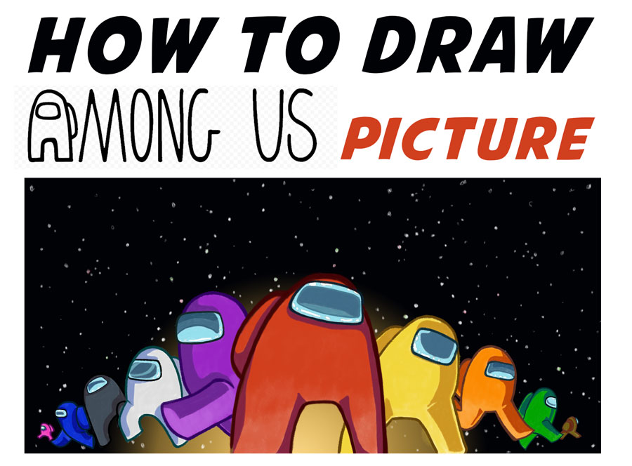

How to Draw Among Us Characters Picture – Easy Step by Step Drawing Tutorial for Kids
-- November 18, 2020 by admin -- 1 Comment
Today I will show you how to draw a scene with 10 characters from the popular video game, Among Us. I break down the tutorial into more than 30 steps, so hopefully, it is easy enough to follow along with. Happy Drawing!